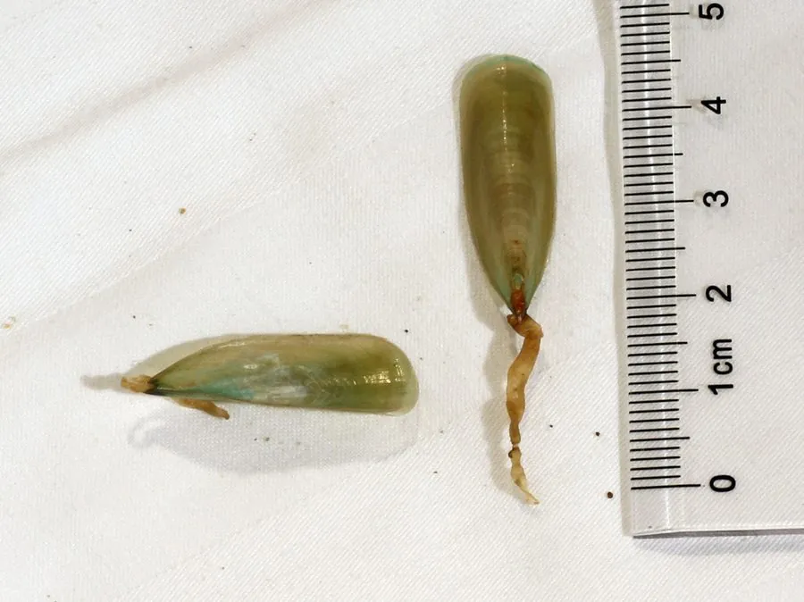

其他无脊椎动物 · 动物界
海豆芽 Lingula anatina

有 5 亿年历史的活化石腕足动物，壳呈舌形，靠肉茎穴居泥沙，中国南方沿海居民常采食，俗称海豆芽。
- 分类
- 门腕足动物门纲无铰纲目海豆芽目科海豆芽科属海豆芽属
- 栖息环境
- 潮间带和浅海泥沙底，用肉茎挖洞穴居
- 地理分布
- 中国南方、日本、东南亚和澳大利亚北部沿海
- 保护级别
- 暂无评估；采捕需控制强度
物种志
海豆芽有两片绿色或褐绿色的壳，壳呈舌形或长椭圆形，长约 3–5 cm，壳面光滑，有细密的生长纹；壳的后端伸出一根粗壮的肉茎，用来在泥沙中挖洞和固定身体。它属于腕足动物门，外形像双壳贝类，但内部结构不同。
它生活在潮间带和浅海的泥沙底，用肉茎在泥沙中挖洞穴居，靠壳内的触手冠滤食浮游生物和有机颗粒。海豆芽是著名的活化石，从 5 亿多年前的寒武纪一直延续至今，形态变化很小。它分布于中国南方、日本、东南亚和澳大利亚北部沿海，在中国潮汕等地被采食，俗称海豆芽。由于采挖和滩涂开发，部分地区的资源有所减少，采捕时需要控制强度。
形态与习性
- 食性用触手冠滤食浮游生物和有机颗粒
- 壳长约 3–5 cm
- 形态壳呈舌形，后端伸出粗壮肉茎
- 栖息潮间带和浅海泥沙底，穴居生活
- 活化石5 亿多年前寒武纪延续至今，形态变化很小
- 经济中国南方沿海居民采食，俗称海豆芽
趣味知识
- 海豆芽是活化石，从 5 亿多年前一直延续到今天。
- 它的两片壳看起来像贝壳，其实属于腕足动物。
- 海豆芽的肉茎能挖洞，把身体固定在泥沙里。